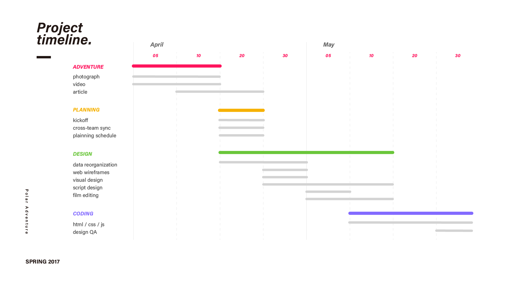
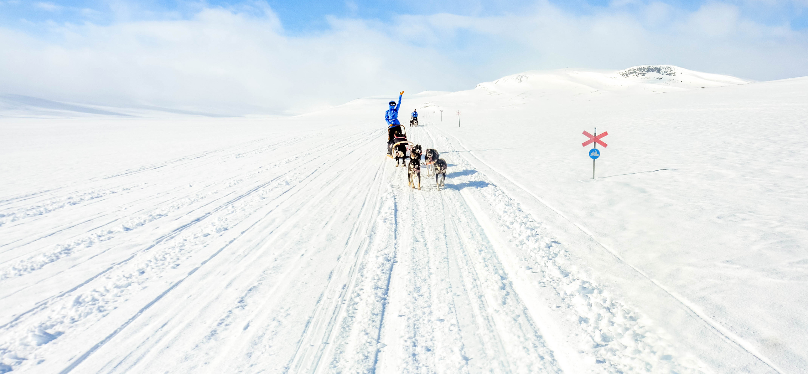
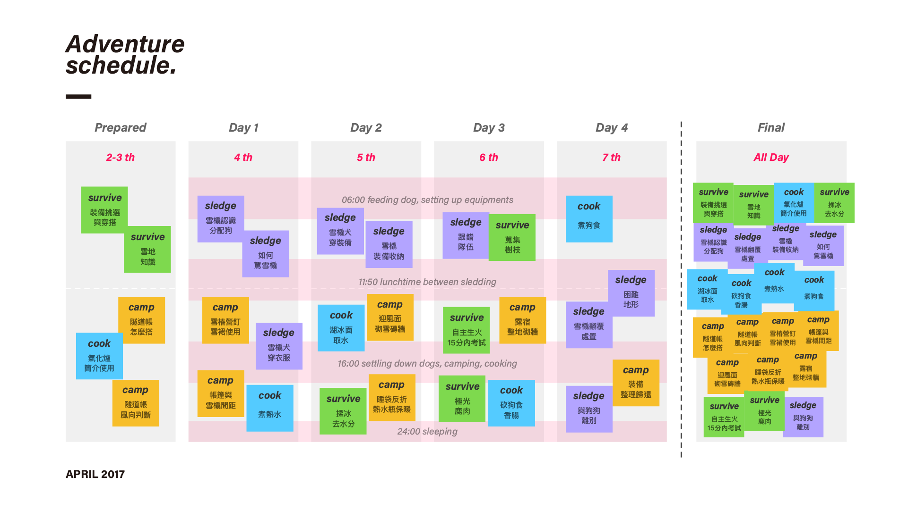
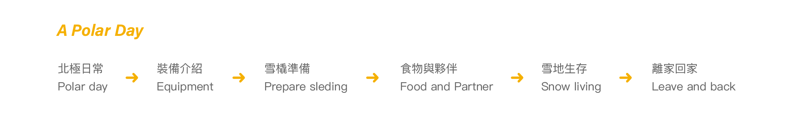

Project Vision
北極挑戰網頁策劃與腳本設計、網頁設計
目標透過很不一樣的方式，回饋支持我去北極挑戰的人們，透過設計整合心路歷程與收穫，將雪橇奇幻之旅用視覺饗宴回饋給大家，鼓勵人們勇於跨出舒適圈，勇敢作夢。
Challange
1) 體驗型資訊，面向多元，資訊量爆炸，如何整頓資訊說好一個故事，讓傳達淺顯易懂？
2) 媒材多元且駁雜四散各地，每個段落重點都落在不同的媒材上，包含影片、照片、文章等
3) 將奇幻的感官傳遞給使用者與受眾者
Project
北極挑戰網頁策劃與腳本設計、網頁設計
Role
PM - 網頁策劃與專案管理
Designer - 影片腳本設計以及網頁 UI/UX 設計
Copywriter - 文案與文章撰寫
Photographer - 動態與靜態攝影
Duration
Apr - May 2017, 2 Months

Kickoff
這是緣起橫跨半年的案子，2016 年 12 月時參加戶外品牌海選，最終獲得第一名取得北極雪橇挑戰資格，在 17,416 人的支持下前往北極，身上承擔破萬人的人情壓力促使我將體驗收穫轉化成人人能參與其中的作品。
北極雪橇的體驗資訊比想像中來得海量爆炸且多元，如何說一個好故事並傳遞身在其中的感受，同時內容具有知識實用性，包含：戶外雪地教育、北極生存知識、雪橇使用指南等。

Data Reorganization
將體驗資訊與自己產出的拍攝資料做分析，列出同質性高的固定項目，疏理歸納出脈絡。
Items
1) Survive - 野外雪地生存
2) Sledge - 雪橇犬與雪橇駕駛
3) Cook - 食物處理以及餵飽狗夥伴
4) Camp - 過夜系統與保暖系統
Data Analytics
將每天分散學到的野外資訊做分類，包含：戶外雪地教育、北極生存知識、雪橇使用指南、野外日常瑣事。

